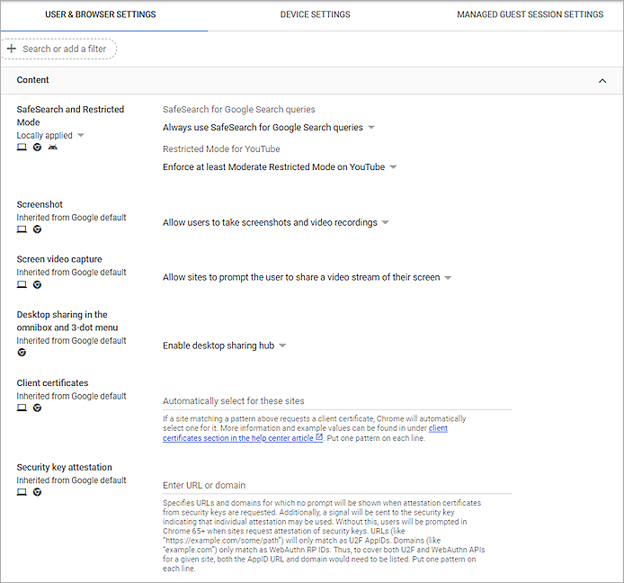

You can use your Firebox to monitor and control Google Chromebook traffic. The WatchGuard Explicit proxy is a powerful feature you can use to monitor, inspect, detect, and block traffic without a client installed on the host. Any traffic configured to route through the Explicit proxy enables the full power of WatchGuard’s security services to monitor the traffic with security services licensed and configured.
Recommendations:
- Do not allow Chromebook devices to connect to the Explicit proxy through the public (external) IP address of the Firebox. Use a VPN instead.
- Allow Chromebook devices to connect to the Explicit proxy on the Firebox from private networks that use the Firebox as the gateway.
- Configure VPN and Wi-Fi settings for managed Chromebooks to implement a secure device policy that filters on-premises and off-premises Internet access through the Firebox as the gateway.
This solution requires the Firebox administrator to configure policies on the Firebox to block or allow traffic and allows clientless filtering.
Integration Summary
The hardware and software used in this guide include:
- WatchGuard Firebox
- Fireware v12.7.1
- Chromebook
- Google Chrome OS Version 91.0.4472.167
- Cloud Services of Google
Configuration Summary
To implement this solution, you must configure the Firebox and enrolled Chromebooks with settings that route all traffic to the Internet through the Firebox as a proxy server.
Firebox configuration:
- Enable Mobile VPN with L2TP, and add a user in the L2TP-Users group
- Enable HTTPS content inspection
- Configure the Explicit proxy for all traffic from private networks
- Enable Safe Search (or enable on the Chromebooks)
- Enable WebBlocker
Google Chromebook configuration (through the Google Admin Console):
- Enroll Chromebooks in your enterprise domain
- Restrict sign-in to only domain accounts and disable guest sign-in
- Restrict Wi-Fi connections to Wi-Fi networks managed by the Firebox (for Chromebooks that are used only on-premises)
- Require Chromebooks to establish an L2TP VPN connection to the Firebox
- Configure Chromebooks to use the Firebox as the proxy server
- Import the proxy authority CA certificate to Chromebooks
- Enable Safe Search (or enable on the Firebox)
With this configuration in place:
- All connections from on-premises Chromebooks to the Internet go through the Explicit proxy on the Firebox
- All connections from off-premises Chromebooks to the Internet must go through an L2TP VPN tunnel to the Firebox and then through the Explicit proxy on the Firebox
- Safe Search controls the types of search results Chromebook users can see
- WebBlocker controls the website categories users can connect to
Logging and Reporting
Logging and reporting of web traffic is configured in the same way as logging for most other proxy traffic. URLs are encapsulated in log messages, which you can send to a Dimension Server. Firebox administrators can use Dimension reports as a powerful tool to increase the visibility of activity in Chromebook intensive BYOD environments.
Google Admin Console
Prerequisites: Google Workspace for Education
Google Workspace for Education is Google’s suite of productivity services geared towards education environments. We strongly recommend this document for users of WatchGuard products whose goal is to safeguard internet activity on Chromebook devices within the educational context.
To proceed, you must have enterprise administrative rights over the educational institution that manages the Chromebook environment and the WatchGuard protected network environment.
- Log in to the Google Admin Console as an administrator.
- Enroll your Chromebook. For information about how to enroll your Chromebook, see Enroll Chrome OS devices.
- Select Devices > Overview.

- To see the list of enrolled Chromebook devices, click Chrome devices.
Recommended Settings
Guest Sign-In
Your Google Chrome devices might be initially configured to allow Guest sign-in. If your organization wants more strict control Chromebook usage, you can disable guest sign-in.
To disable guest sign-in:
- From the Google Admin console, select Devices > Chrome > Settings > Device.
- In the Sign-in Settings section, from the Guest mode drop-down list, select Disable guest mode.
- Click Save.
Sign-In Restrictions
For enterprise-enrolled Chromebooks administered from the Google Admin console, you can restrict the domain accounts that can sign in.
To configure sign-in restrictions:
- From the Google Admin console, select Devices > Chrome > Settings > Device.
- In the Sign-in Settings section, from the Sign-in restriction drop-down list, select Restrict sign-in to a list of users.
- In the Allowed users text box, type the users, you can use a wildcard (*) to allow all accounts in your domain. For example, type *@wgqateam.com to allow all accounts in that domain.
- Click Save.
Wi-Fi
Configure Wi-Fi settings for the enrolled Chromebooks. These settings control how users can connect to off-premises and on-premises Wi-Fi networks.
- On-premises — Chromebooks used on authorized managed networks
- Off-premises — Chromebooks used on the home network or other offsite network
To configure Wi-Fi settings:
- From the Google Admin console, select Devices > Networks.
- Select the organizational unit.
To apply the settings to all devices, leave the top organizational unit selected.

If no Wi-Fi networks enabled, you can configure specific Wi-Fi networks available to the Chromebook users in the Google Admin console. You can configure this by user or by device. For more information and best practices, see Google’s Chrome device Quick Start Guide.
- In the Wi-Fi section, click Create Wi-Fi Network.
In the Wi-Fi configuration, you can specify a specific proxy for Wi-Fi traffic. We recommend you specify the proxy in Network settings instead of Wi-Fi settings.
- In the Platform access section, select Chromebooks (by user).
- In the Details section, in the Name text box, enter a friendly name for the Wi-Fi network.
- In the Service set identifier (SSID) text box, enter the SSID.
- Select the Automatically connect check box.
- From the Security Type drop-down list, select WPA/WPA2.
- In the Passphrase text box, enter the passphrase.
- Select the Allow IP address to be configured on the device (Chrome OS only) check box (optional).
- From the Proxy Type drop-down list, select Direct Internet connection.
- Keep the default value for all other settings.
- Click Save.
For Chromebook devices that you want to connect only to on-premises networks, the administrator must restrict the Wi-Fi connections to allow connections only to Wi-Fi networks managed by the Firebox.
- From the Google Admin console, select Devices > Networks.
- Select the organizational unit.
To apply the settings to all devices, leave the top organizational unit selected. - Click the General Settings (Chromebook only).
- In the Auto-connect section, select the Only allow managed networks to auto-connect check box.
- Click Save.
- In the Restrict Wi-Fi networks section, select the Restrict users to connecting only to the Wi-Fi networks configured for this Organizational Unit (Chrome version 49 or later) check box.
- Click Save.
- In the Allowed network interfaces section, select the Wi-Fi and VPN check boxes.
- Click Save.
If you do not restrict Wi-Fi network connections, Chromebook users can connect to any off-premises Wi-Fi network. To inspect this traffic, you must require the user to establish a VPN connection before the Chromebook can browse the Internet. After the user connects to the VPN, traffic between the Chromebook and the Internet goes through the VPN tunnel to the Firebox and all HTTP and HTTPS traffic go through the Explicit proxy.
The next two sections describe how to configure the VPN and Explicit proxy settings.
L2TP VPN Connections
To use the Explicit proxy for both on-premises and off-premises Internet connections from Chromebooks, the Chromebooks must use a VPN to connect to the Firebox. We recommends an L2TP VPN connection, which you can specify in the Google Admin console.
Enable L2TP VPN Connections on the Firebox
On the Firebox, enable Mobile VPN with L2TP and add a user for authentication.
To enable Mobile VPN with L2TP on the Firebox:
- Log in to Fireware Web UI (https://<your firebox IP address>:8080).
- Select VPN > Mobile VPN.
- In the L2TP section, click Manually Configure.
The Mobile VPN with L2TP configuration page opens.

- Select the Activate Mobile VPN with L2TP check box.

- Select the Authentication tab.
- Keep the default value for all other settings.

- Select the IPSec tab.
- Make sure the Enable IPSec is selected.
- Select the Phase 1 Settings tab, in the Credential Method section, select Use Pre-Shared Key.
- In the adjacent text box, type the pre-shared key.
- In the Transform Settings section, click Add.
The Transform Settings dialog box opens. - From the Authentication drop-down list, select SHA2-256.
- From the Encryption drop-down list, select AES (128-bit).
- From the Key Group drop-down list, select Diffie-Hellman Group 15.

- Click OK.

- Click Save.
Add a user to the L2TP-Users group.
- Select Authentication > Servers.

- To use the Firebox-DB authentication server, click Firebox-DB.
- In the Firebox Users section, click Add.

- In the Name text box, type a user name.
- In the Passphrase and Confirm text boxes, type the password.

- Click OK.
- In the Firebox Groups section, select the L2TP-Users, and click Edit.
- In the Firebox Authentication Users section, select the user you created.

- Click OK.
- Click Save.
The user name and passphrase in the L2TP-Users group are the user name and password you specify for the VPN in the Google Admin console.
Configure VPN Settings in the Google Admin Console
After you enable Mobile VPN with L2TP on the Firebox, configure the VPN settings for the Chromebooks:
- From the Google Admin console, select Devices > Networks.
- Select the organizational unit.
- In the VPN section, select Create VPN Network.
- In the Platform access section, select the Chromebooks (by user) check box.
- Select the Chromebooks (by device) check box.
- In the Name text box, type a name for the VPN.
- In the Remote Host text box, type the external IP address of the Firebox.
- From the VPN Type drop-down list, select L2TP over IPsec with Pre-Shared Key.
- In the Pre-Shared Key text box, type the pre-shared key you specified on the Firebox.
- In the Username text box, type the name of a user in the L2TP-Users group on the Firebox.
- In the Password text box, type the password.
- From the Proxy Type drop-down list, select Direct Internet connection.
- Keep the default value for all other settings.

- Click Save.
- To confirm the VPN was successfully configured, sign in to an enterprise-enrolled Chromebook and click the time in the bottom right corner.
- Click the Settings icon.

- In the Network section, click VPN.

- Click the arrow icon adjacent to the VPN connection, click Connect. The VPN connects successfully.

Proxy Settings
This section describes the steps to configure settings on the Firebox and in the Google Admin console to filter web traffic from the enrolled Chromebook, regardless of whether the Chromebook is connected to the Firebox-administered network or an off-premises network that is not managed by the Firebox.
Prerequisites:
- Configure Mobile VPN with L2TP on the Firebox and add a user to the L2TP-Users group
- L2TP VPN is configured for the Chromebooks so the Chromebook users can connect to the Firebox
To use the Firebox as a proxy server, configure the Explicit proxy policy on the Firebox, then use the Google Admin console to specify the Firebox as a proxy for enrolled devices.
Clone and Configure Proxy Actions on the Firebox
- In Fireware Web UI, select Firewall > Proxy Actions.
- Select the HTTP-Client.Standard (Predefined) proxy action. Click Clone.
- Type a Name for the cloned proxy action.

- Click Save.
- Select the HTTPS-Client.Standard (Predefined) proxy action. Click Clone.
- Type a Name for the cloned proxy action.
- Select the Content Inspection tab.
- In the Domain Names section, select the domain name and click Edit.
- From the Action drop-down list, select Inspect.
- From the Proxy Action drop-dwon list, select the HTTP-Client.Standard.Chrome you cloned earlier.

- Click OK.
- Repeat steps 8-11 to enable content inspect for other sites.
- In the Action to take if no rule above is matched section, from the Action drop-down list, select Inspect.
- From the Proxy Action drop-down list, select HTTP-Client.Standard.Chrome you cloned earlier.

- Click Save.
- Select the Explicit-Web.Standard (Predefined) proxy action. Click Clone.
- Type a Name for the cloned proxy action.
- From the Explicit Web Proxy drop-down list, select Connect Tunneling.

- Double-click the default HTTPS rule to edit it.
The Edit Rule dialog box opens. - From the Action drop-down list, select HTTPS Proxy Action.
- Select the HTTPS-Client.Standard.Chrome you cloned earlier.

- Click OK.
- In the Action to take if no rule above is matched section, from the adjacent drop-down list, select HTTPS Proxy Action.
- Select the HTTPS-Client.Standard.Chrome you cloned earlier.

- Click Save.
Configure the Explicit Proxy Policy on the Firebox
- Log in to Fireware Web UI (https://<your firebox IP address>:8080).
- Select Firewall > Firewall Policies.
- Click Add Policy.
- Select Proxies, from the Select a proxy drop-down list, select the Explicit-proxy.
- From the Select a Proxy action drop-down list, select Explicit-Web.Standard.Chrome you cloned earlier.

- Click Add Policy.
By default, the policy applies to traffic from the Any-Trusted and Any-Optional networks (on-premises connections). For this policy to apply to off-premises connections, you must add the group L2TP-Users to the From list of the policy.
- Below the From list, click Add.
- From the Member type drop-down list, select Firewall Group, then select L2TP-Users.
- Click OK to add the L2TP-Users group to the From list of the policy.

- Click Save.
When you add the Explicit-proxy policy, a WG-PAC-File-Download policy is also added automatically. To use a PAC file to distribute the proxy configuration, this policy allows users on the on-premises networks to connect to the Firebox to get the PAC file.
For information about how to create the PAC file on the Firebox, see Explicit proxy: PAC Files.
Configure Proxy Settings in the Google Admin Console
After you enable the Explicit proxy on the Firebox, you can configure the Chromebooks to use it.
- From the Google Admin console, select Devices > Chrome > Settings > Users & browsers.
- In the Network section, configure the Proxy mode with one of the two options described below.
The Proxy mode has several settings. To use the Explicit proxy on the Firebox, the Chromebooks must use the Firebox as the proxy server. WatchGuard recommends you select one of these proxy mode options.
Option 1 — Manually configure the proxy server address
Use this method if you do not have many clients to configure. From the Proxy mode drop-down list, select Always use the proxy specified below. In the Proxy server URL text box, type the trusted IP address of the Firebox. In this example, our proxy URL is the Firebox internal IP address (10.0.1.15) and the port is 3128. Then click Save.
Option 2 — Distribute a PAC file script to managed Chromebook clients
If you manage a large number of Chromebooks, you can use a PAC (proxy automatic configuration) file to distribute the proxy configuration. A PAC file is a simple JavaScript file that you can use to configure client web browsers to use the Firebox as a proxy server. The PAC file includes the IP address and port number the client can use to connect to the Firebox. You can host the PAC file on the Firebox.
From the Proxy mode drop-down list, select Always use the proxy auto-config specified below. Then specify the path for the client to get the PAC file.
Example: 10.0.1.15:4125/p1.pac
For more information about PAC files on the Firebox, see Explicit proxy: PAC Files in Fireware Help.
Import the Proxy Authority CA Certificate to Client Devices
When you enable content inspection in the HTTPS proxy, the Firebox uses the default self-signed Proxy Authority CA certificate to re-encrypt the traffic. Users receive warnings in their web browsers because the certificate is an untrusted self-signed certificate.
To prevent these warnings, import this certificate (or your own certificate) on each client device.

Import the CA certificate used by the Firebox to Google Chromebooks
When you enable HTTPS content inspection in the explicit proxy, the Firebox automatically creates the WatchGuard Certificate Portal policy, which allows connections to the Certificate Portal on the Firebox. The port and protocol for the certificate portal (TCP port 4126) appear in the WatchGuard Certificate Portal policy.

To connect to the Certificate Portal to download the certificate file:
- From a web browser on the management computer, go to http://<Firebox interface IP address>:4126/certportal.
- Download the certificate file.
To import the certificate file:
- From the Google Admin console, select Devices > Networks.
- Select the organizational unit.
- In the Certificates section, click Create Certificate.

- In the Name text box, type a certificate name.
- Click Upload to upload the certificate you downloaded from the Firebox.
- In the Certificate Authority section, select the Chromebook check box.
- Click Add.
To verify the certificate authority and test SSL inspection on a managed Chrome device:
- Sign in to a managed Chromebook.
- To verify the certificate authority, open a Chrome browser and go to chrome://settings/certificates.
- Click Authorities, scroll down to see the newly-added certificate authority.
- Browse to a site that uses HTTPS.
- Verify the building icon appears in the address bar.
- To see permission details about the connection, click the building icon in the address bar.
- To see certificate details, click Certificate.
Enable Safe Search and WebBlocker
To control the types of content that users can see, you can enable Safe Search and WebBlocker.
Enable Safe Search
We recommend that you use Safe Search to restrict the content that users can see in Google search results. You can enable Safe Search on the Firebox or through the Google Admin console.
To enable Safe Search through the Google Admin console:
- Select Devices > Chrome > Settings > Users & browsers.
- Select the organizational unit.
- In the Content section, from the SafeSearch for Google Search queries drop-down list, select Always use SafeSearch for Google Search queries.
- (Optional) From the Restricted Mode for YouTube drop-down list, select Enforce at least Moderate Restricted Mode onYouTube.
- Click Save.

To enable Safe Search on the Firebox:
- Edit the Explicit-proxy policy.
- Select the Proxy Action tab.
- Select HTTP Request > General Settings.
- In the General Settings section, select the Enforce SafeSearch check box.
- Click Save.
To enable safe search for inspected HTTPS traffic, you must also enforce safe search in the HTTP proxy action used for HTTPS content inspection.
- Edit the HTTP-Client.Standard.Chrome proxy action.
- Select HTTP Request > General Settings.
- In the General Settings section, select the Enforce SafeSearch check box.
- Click Save.
Configure WebBlocker
On the Firebox, you can enable WebBlocker to add another layer of protection. WebBlocker blocks connections to websites based on the content category. WebBlocker can identify and block over 130 content categories including adult, offensive, tasteless, and violent.
To enable WebBlocker:
- In Fireware Web UI, select Subscription Services > WebBlocker.
- Click Next.
- In the Action Name text box, type a name for the WebBlocker action.
- Click Next.
- In the Categories list, select the content categories to block.
- Click Next.
The wizard automatically applies this action to the three configured clone proxy actions.
- Click Next two more times to complete the wizard.
- Click Finish.
For more information about WebBlocker configuration, such as how to enable WebBlocker for other types of policies and how to use Policy Manager to configure WebBlocker, see Configure WebBlocker in Fireware Help.